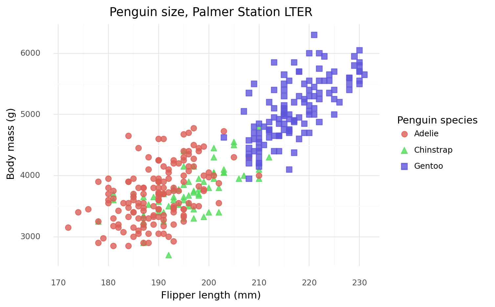

from palmerpenguins import load_penguins
penguins = load_penguins()
from siuba import group_by, summarize, _
(penguins
>> group_by(_.species)
>> summarize(n = _.species.count())
)| species | n | |
|---|---|---|
| 0 | Adelie | 152 |
| 1 | Chinstrap | 68 |
| 2 | Gentoo | 124 |
May 9, 2022
As I’ve been saying every year for the past seven years or so, I am learning Python. (It’s been a journey.)
Python packages like pandas have several ways to work with data. There are several options for indexing, slicing, etc. They have a lot of flexibility but also a lot of conventions to remember.
I am familiar with the grammar of the tidyverse, which provides a consistent set of verbs to solve common data manipulation challenges. I investigated ways to port tidyverse-like verbs to Python (hopefully making Python a little easier to grasp).
Here are three packages that do just that.
The siuba package, created by Michael Chow, allows you to use dplyr-like syntax with pandas. Siuba ports over several functions, including select(), filter(), mutate(), summarize(), and arrange(). The package also allows you to use group_by() and a >> pipe.
Let’s check out a few examples using the palmerpenguins dataset (R, Python).
Thanks to the documentation and interactive tutorials available for siuba, it’s easy to see the parallels and differences with dplyr so that you can craft these data manipulation tasks yourself.
from palmerpenguins import load_penguins
penguins = load_penguins()
from siuba import select
(penguins
>> select(-_.isalpha(), _.species)
>> group_by(_.species)
>> summarize(
bill_length_mm = _.bill_length_mm.mean(),
bill_depth_mm = _.bill_depth_mm.mean(),
flipper_length_mm = _.flipper_length_mm.mean(),
body_mass_g = _.body_mass_g.mean()
)
)| species | bill_length_mm | bill_depth_mm | flipper_length_mm | body_mass_g | |
|---|---|---|---|---|---|
| 0 | Adelie | 38.791391 | 18.346358 | 189.953642 | 3700.662252 |
| 1 | Chinstrap | 48.833824 | 18.420588 | 195.823529 | 3733.088235 |
| 2 | Gentoo | 47.504878 | 14.982114 | 217.186992 | 5076.016260 |
# A tibble: 3 × 8
species island bill_length_mm bill_depth_mm flipper_length_mm body_mass_g
<fct> <dbl> <dbl> <dbl> <dbl> <dbl>
1 Adelie NA 38.8 18.3 190. 3701.
2 Chinstrap NA 48.8 18.4 196. 3733.
3 Gentoo NA 47.5 15.0 217. 5076.
# … with 2 more variables: sex <dbl>, year <dbl>The plotnine package, created by Hassan Kibirige, lets you use a grammar of graphics for Python.
You can use siuba and plotnine together, similar to how you would use dplyr and ggplot2 together.
from siuba import *
from plotnine import *
from palmerpenguins import load_penguins
penguins = load_penguins()
(penguins
# using siuba pipe
>> ggplot(aes(x = 'flipper_length_mm', y = 'body_mass_g'))
# creating plotnine plot
+ geom_point(aes(color = 'species', shape = 'species'),
size = 3,
alpha = 0.8)
+ theme_minimal()
+ labs(title = "Penguin size, Palmer Station LTER",
subtitle = "Flipper length and body mass for Adelie, Chinstrap, and Gentoo Penguins",
x = "Flipper length (mm)",
y = "Body mass (g)",
color = "Penguin species",
shape = "Penguin species"))
Folks have heuristics to translate ggplot2 code to plotnine. These help understand the nuances between the two.
OK, this one is cheating a bit because the janitor package by Sam Firke is not part of the tidyverse. One more package that uses ‘tidyverse-like’ verbs is pyjanitor. With pyjanitor, you can clean column names, identify duplicate entries, and more.
from janitor import clean_names
import pandas as pd
import numpy as np
example_df = {
'Terrible Name 1': ['name1', 'name2', 'name3', 'name4'],
'PascalCase': [150.0, 200.0, 300.0, 400.0],
'this_has_punctuation?': [np.nan, np.nan, np.nan, np.nan],
}
pd.DataFrame.from_dict(example_df).clean_names()| terrible_name_1 | pascalcase | this_has_punctuation_ | |
|---|---|---|---|
| 0 | name1 | 150.0 | NaN |
| 1 | name2 | 200.0 | NaN |
| 2 | name3 | 300.0 | NaN |
| 3 | name4 | 400.0 | NaN |
Python’s pandas allows you to method chain with pipes. They can be used with pyjanitor, as well.
from janitor import clean_names, remove_empty
import pandas as pd
import numpy as np
example_df = {
'Terrible Name 1': ['name1', 'name2', 'name3', 'name4'],
'PascalCase': [150.0, 200.0, 300.0, 400.0],
'this_has_punctuation?': [np.nan, np.nan, np.nan, np.nan],
}
(pd.DataFrame.from_dict(example_df)
.pipe(clean_names)
.pipe(remove_empty)
)| terrible_name_1 | pascalcase | |
|---|---|---|
| 0 | name1 | 150.0 |
| 1 | name2 | 200.0 |
| 2 | name3 | 300.0 |
| 3 | name4 | 400.0 |
While Python syntax and conventions are still on my “to-learn” list, it is helpful to know there are packages that can bring the familiarity of the tidyverse to Python.
I came across other packages that port the tidyverse to Python. I didn’t investigate them deeply but wanted to share in case they are helpful.
If you recommend these packages or know of others, please let me know on Twitter!
Adam Austin started a thread of dplyr-alike Python packages on Mastodon.
Working in Python but miss #rstats' tidyverse? 🐍 Here are three+ packages that port tidyverse-like syntax to use in your #pydata work.
— Isabella Velásquez (@ivelasq3) May 9, 2022
Blog post: https://t.co/ScGycjYyOo